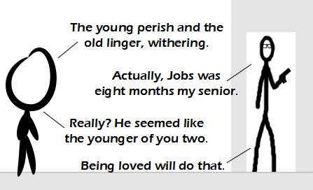

Comic JK 784
When I Feel Like It
⇤
<
?
>
⇥

⇤
<
?
>
⇥
Forum
.
RSS
.
Digg
.
Facebook
.
Reddit
.
Twitter
.
Stumbleupon
Enter your thoughts on number 784 here. Please, no spamming, trolling, phreaking or loving apple products. Does no one remember the fact that Gates is a huge philanthropist? As opposed to Jobs? And that some people formed opinions of him and Jobs based on their conduct outside of the electronics industry? Finally laid to rest in a sleek white casket, the late Steve Jobs is surrounded by mourners in a massive cathedral. As the afternoon sunlight shines down on him through intricate stained glass revealing a beautiful spectrum of colours, Mr. Jobs will be remembered in death as he was in life. Overshadowed by windows. >>Hilarious >This could probably be paired with the above's "intricate stained glass." >>Duh. Thanks for the explanation Mr. Obvious. Does the sleek white casket have handles? Can it be opened without voiding the warranty? >cover it in aluminum and charge 8x as much And within a year, He-Who-Must-Not-Be-Named will intrude upon the peace of that aluminum casket all to retrieve the Death Cellphone, the Mobile of Destiny, the Elder Smartphone, the iPhone 5. It'd be funnier if the guy on the right was wearing a blocky black hat. > Why would Bill Gates wear a blocky black hat? Is that Bill? >Yes, Bill Gates from the Winjas story arc >>When was that again? Is he holding a gun? >Yes, he uses it to shoot programmers who disagree with him >> Not a Zune, then? >>s the afternoon sunlight shines down on him through intricate stained glass Windows(tm) revealing a beautiful spectrum of colours, Mr. Jobs will be remembered in death as he was in life. That explains the rainbow beach ball spinning above his casket. lol